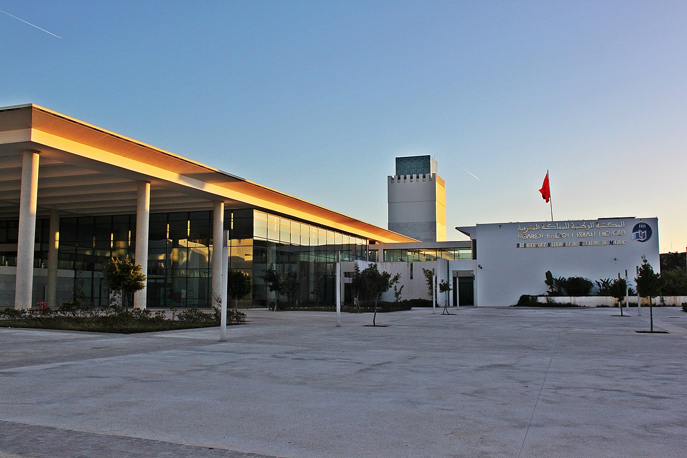

الأدب

الأدب في المغرب هو مجموع الإنتاجات الأدبية لأشخاص عاشوا أو ارتبطوا بالمغرب أو بمختلف الكيانات والدول التي تعاقبت على المجال الجغرافي للمغرب الأقصى عبر التاريخ. يَضم الأدب في المغرب مختلف التعبيرات الأدبية المكتوبة من رواية وشعر وزجل وكتابة مسرحية وغيرها، والمعبر عنها بعدة لغات سواء العربية، العبرية، اللاتينية، الأمازيغية، الدارجة، الفرنسية، الإسبانية، أو الإنجليزية
المكتبة الوطنية للمملكة المغربية هي مكتبة وطنية من بين مهامها جمع ومعالجة وحفظ ونشر الرصيد الوثائقي المغربي
الزجل هو فن من فنون الأدب الشعبي يعود أصله إلى بلاد المغرب والأندلس. وهو شكل تقليدي من أشكال الشعر العربي باللغة المحكية وهو ارتجالي